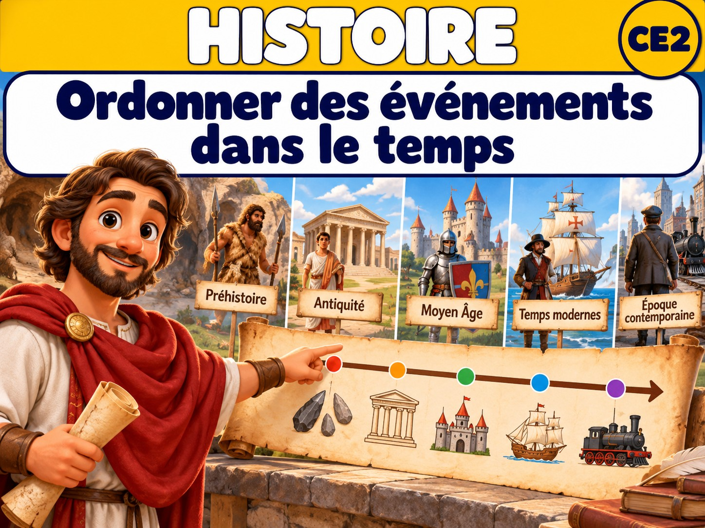
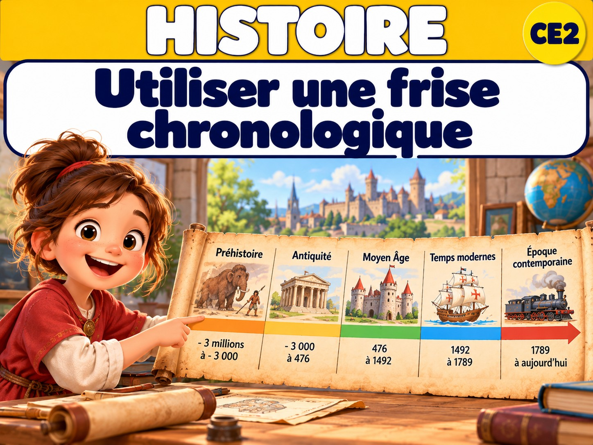
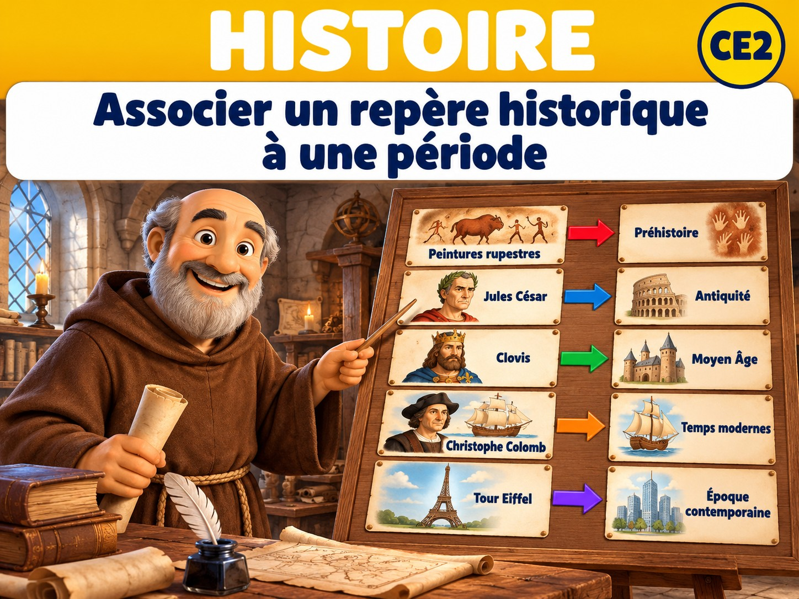

P1 · HIS-P1-01
Ordonner des événements dans le temps
Du plus ancien au plus récent →

P1 · HIS-P1-02
Utiliser une frise chronologique
Lire les dates et situer un événement →

P1 · HIS-P1-03
Identifier les grandes périodes historiques
Découvrir les cinq grandes périodes →

P1 · HIS-P1-04
Associer un repère historique à une période
Chercher les indices qui renseignent sur le passé →
P2 · HIS-P2-01
Comparer les habitations
Habiter autrefois et aujourd’hui →
P2 · HIS-P2-02
Comparer l’alimentation à différentes époques
Comment se nourrissait-on autrefois ? →
P2 · HIS-P2-03
Comparer des objets et vêtements de différentes époques
Les usages restent, les objets évoluent →
P2 · HIS-P2-04
Repérer changements et permanences dans les modes de vie
Ce qui change… et ce qui reste →
P3 · HIS-P3-01
Situer quelques figures et événements de l’Antiquité et du début du Moyen Âge
Repérer une époque et quelques dates →
P3 · HIS-P3-02
Associer un personnage historique à son époque
Trouver des indices dans une source →
P3 · HIS-P3-03
Prélever des informations dans des documents historiques
Lire une trace du passé →
P3 · HIS-P3-04
Présenter un personnage ou raconter un événement étudié
Expliquer avec des mots simples →
P4 · HIS-P4-01
Situer quelques figures et événements du Moyen Âge
Clovis, Charlemagne et quelques dates →
P4 · HIS-P4-02
Décrire quelques aspects de la vie au Moyen Âge
Paysans, artisans et seigneurs →
P4 · HIS-P4-03
Expliquer simplement l’affirmation du pouvoir royal
Comment le pouvoir du roi se renforce →
P4 · HIS-P4-04
Mettre en relation plusieurs documents pour expliquer un événement
Croiser les indices historiques →
Aucune leçon disponible pour cette recherche ou cette période.